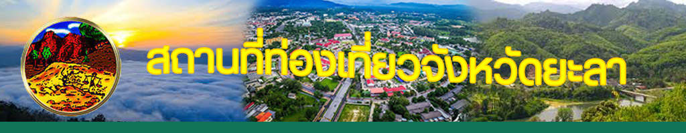
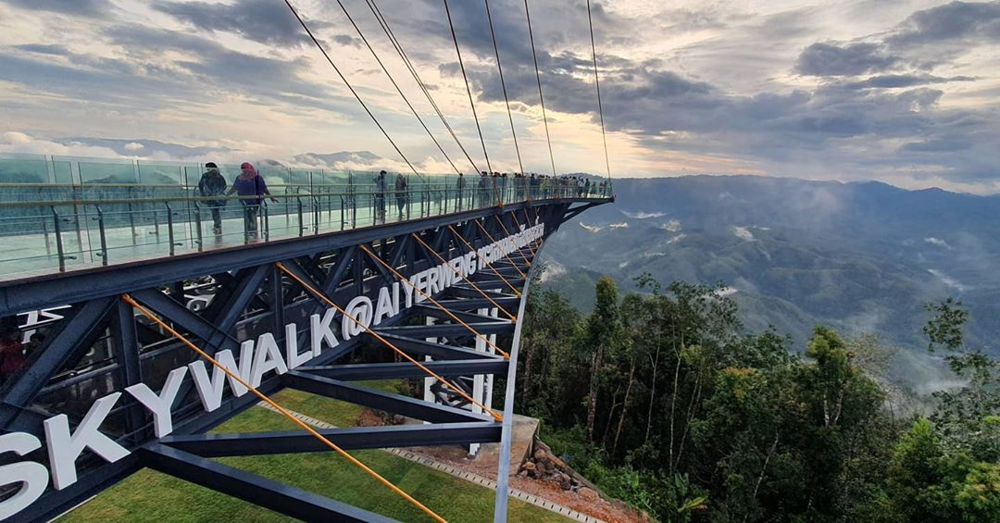
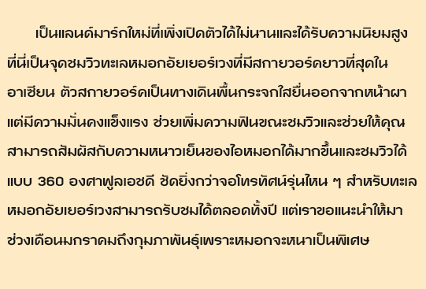
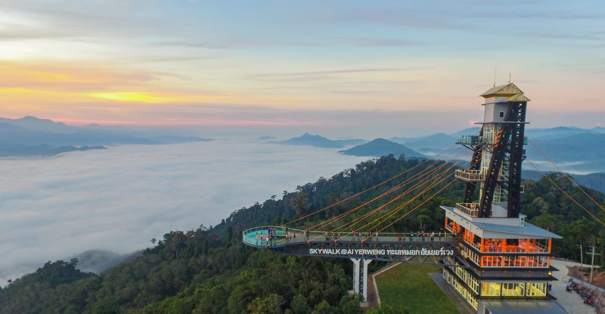

แผนที่ ตามGoogle Map
ที่ตั้ง ตำบล อัยเยอร์เวง อำเภอ เบตง จังหวัด ยะลา
เวลาเปิดเข้าชม 5.30 นาฬิกา
เวลาปิดเข้าชม 16.30 นาฬิกา
ค่าธรรมเนียม ไม่มี
|  | |
|
|
|  |  |
แผนที่ ตามGoogle Map ที่ตั้ง ตำบล อัยเยอร์เวง อำเภอ เบตง จังหวัด ยะลา เวลาเปิดเข้าชม 5.30 นาฬิกา เวลาปิดเข้าชม 16.30 นาฬิกา ค่าธรรมเนียม ไม่มี |
 |